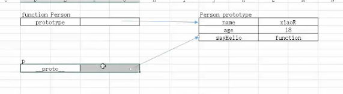
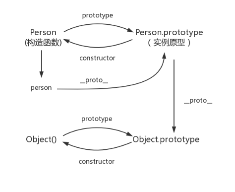

- 原型prototype
- 基于原型的继承
1.Object.create()
2.原型继承图示
- 原型链


每个构造函数都有一个原型对象，原型对象都包含一个指向构造函数的指针，而实例都包含一个指向原型对象的内部指针。
那么假如我们让原型对象等于另一个类型的实例，结果会怎样？
显然，此时的原型对象将包含一个指向另一个原型的指针，相应地，另一个原型中也包含着一个指向另一个构造函数的指针。
假如另一个原型又是另一个类型的实例，那么上述关系依然成立。
如此层层递进，就构成了实例与原型的链条。这就是所谓的原型链的基本概念